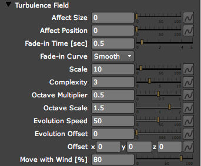
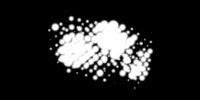
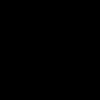
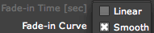
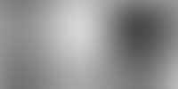
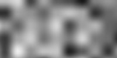
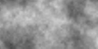

Physics tab> Air group> Turbulence Field group
The Physics> Air group offers two kinds of displacement models to push along the particles. The model discussed here is Turbulence Field, which is a 4D displacement based on Perlin Noise fractal. This is different than most of Particular's physics, which are built on fluid dynamics.
Turbulence adds motion so the particles that are close to each other get a similar, but not equal, random motion. This behavior helps tremendously when creating fire and smoke effects to make particle motion look natural. Unlike fluid dynamics, Turbulence computes quickly and does not depend on a simulation that starts at the first frame. This means the Turbulence result can be seen quickly at any point in the particle simulation.
In the Turbulence Field group, the first four controls set the behavior of the particles. The other controls set the properties and behavior of the field. To learn about the inner workings of Turbulence Field and Perlin Fractal Noise, go to the end of this page. The other displacement model used by the Physics Air group is Spherical Field, which is covered on this page.

The Turbulence Field group.
Affect Size
The Affect Size control sets the size of the particles as they pass through the field with a maximum value for the particle size change. As particles pass through the field, a value will be sampled at each particle's location, and the particle size will be increased or decreased by the value specified in the field. This can be useful for creating cloud-like particle clusters, or when you want to create a more irregular or clumpy appearance to the particle's size.
|  | |
| Affect Size Off | Affect Size On |
Affect Position
The Affect Position control changes the position of the particle as it passes through the turbulence field. As particles pass through the field, a value will be sampled at the particle's location, and this value will be used to create a displacement vector that will change the particle's position up to a maximum value specified by the control.
|  | ||
| Affect Position Off | Low Scale | High Scale |
Fade-in Time [sec]
Fade-in Time sets the amount of time before the particles are fully affected by the Turbulence Field, measured in seconds. High values mean the size or position changes from the turbulence field will take a while to appear, fading in gradually over time.
Fade-in Curve pop-up
This control sets the behavior of the fade-in of the particle displacement over time.

There are two Fade-in Curve options:
• Smooth: The default setting. The Smooth method fades in the field smoothly and in a more rounded curve. There will be no visible glitch in the transition to Turbulent behavior over time.
• Linear: Causes the fade to be the same with every subsequent step. This sometimes produces a jerk or glitch in the transition to turbulent motion or size changes.
Scale
The Scale control sets the overall multiplier for the values created by the fractal field. A value of zero means that the field will have no displacement influence, while the default value of ten provides a small multiplier and some displacement of the size or position of the particles. Large values will lead to highly chaotic displacement as each value in the field will result in a large change in the position or size of the particles.
Complexity
Complexity is the number of Perlin noise fields added together to form the fractal field. The higher the number, the greater the complexity of the field.
Octave Multiplier
The Octave Multiplier value sets the influence of each added noise field as compared to the previous field, up to the number specified in the complexity control. Setting greater values will create a denser, more varied fractal field across all four dimensions of the field. Remember that this value alters the complexity of the field and will not cause visible changes unless the Complexity is set to two or higher.
Octave Scale
The Octave Scale value sets the scale of each added noise field compared to the previous, up to the number specified in the complexity control. Low values will create a sparse field that will cause very irregularly spaced displacement, while high values will generally create a dense field with much greater effect. Remember that this value alters the complexity and will not cause visible changes unless the Complexity is set to two or higher.
Evolution Speed
The Evolution Speed control sets how fast the Turbulence Field evolves over time. The default value will cause a fairly quick, random motion in the field. Lowering this value will cause the change in the field to happen more slowly, giving the field a more flowing appearance.
Evolution Offset
The Evolution Offset is similar to the random seed. It offsets the Turbulence Field in the 4th dimension, which is time. The Evolution Offset gives more control over how the variance of the Turbulence Field over time.
Offset X, Y, Z
These three controls offset the entire Turbulence Field in each axis. You can use this control to drive the turbulence field in any of the three dimensions. Since this is a single offset value, to continuously move the field over time you will need to keyframe the offset in the desired direction.
Move with Wind [%]
Move with Wind gives the ability to move the Turbulence Field with the Wind. It ties the Turbulence Field into the Wind X, Y, Z controls in the Air group and is measured as a percentage of the Wind value. At 100%, the Turbulence Field follows the Wind exactly. At 50%, it still follows the Wind's direction, but only 50% of the distance.
This control is set to a value of 80% to give a more realistic look to smoke effects. In the real world, turbulent air moves and is changed by the wind. This value assures that Particular's simulation can behave in a similar way.
How it works: Perlin Noise Fractal Theory
Turbulence is based on Perlin Noise fractal. Perlin Noise is a type of Gradient noise. The function has a pseudo-random appearance, yet all of its visual details are the same size. Visit the Perlin Wikipedia page for greater derail). Based on the varied settings, the turbulence field will add motion so the particles that are close to each other get a similar, but not equal, random motion.
This behavior helps tremendously when creating fire and smoke effects to make particle motion look natural, because it can mimic some of the behavior of particles passing through turbulent air or fluid. Unlike fluid dynamics, Particular's turbulence computes quickly, and it does not depend on a simulation that starts at the first frame. Thus the turbulence result can be seen quickly at any point in the simulation as you scrub the cursor on the timeline.
Think of the Turbulence Field as giant three-dimensional map containing different numbers that evolves over time and can change a particle's position or size. The evolution and complexity of the map allow it to contribute fluid-like motion to the particles.
What is Perlin Noise?
In order to fully comprehend the Turbulence feature, some Perlin Noise fractal theory helps. Perlin Noise was invented by Ken Perlin. (Kudos to Mr. Perlin, this is amazing stuff!) Perlin Noise is a quick way to produce a pseudo-random field of any dimension (1D, 2D, 3D, etc).
The field is 'smooth' and can look something like this (2D):

If the same field is scaled down or 'zoomed out', it looks something like this:

Now, if a couple of these fields with different scales are added together, they form what is called a Perlin Noise Fractal:

The number of fields added together is called Complexity. For example, if three fields are added together, complexity equals three. The difference in scale for each field is called Octave Scale and the difference in influence for each field is called Octave Multiplier. The images above were created using Adobe After Effects' built-in Perlin Noise fractal generator (Effect>Noise>Fractal Noise).
The really interesting part of Perlin Noise that these fractals can be evolved over time. What is seen in the images above is actually a cross section of a 3D Perlin Noise fractal. The cross section can slide through 3D space and thus create a smoothly evolving 2D pattern. This control is called Evolution.
In Trapcode Particular, a 3D displacement field is needed. This requires the Perlin Noise fractal to be 4D so it can smoothly evolve by sliding the 3D cross-section in 4D space. And now you've been initiated into Fractal Noise Theory!